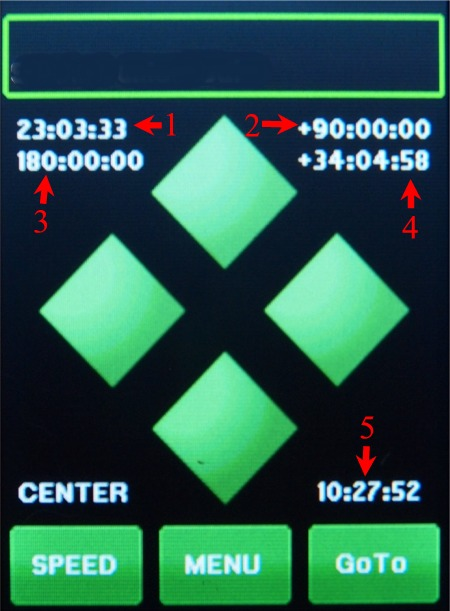

| Interactive Hand-Controller Menus |
|  |
The 5 numbers are explained here: 1 - Right Ascension (in hours:minutes:seconds) 2- Declination (in degrees:arcmin:arcsec) These are in the equatorial coordinate system. 3 - Azimuth (in degrees:arcmins:arcsecs) 4 - Elevation (in degrees:arcmins:arcsecs) These are in the horizintal coordinate system. 5 - Local Time The values shown on the screen are typical for starting up a telescope with the location set to Hollywood in cold or warm start mode, that means with the counterweight down and the telescope pointing to the north pole. Az is at 180 degrees in the north, the declination is set to the pole and the pole's elevation is equal to the latitude of the observing site. To return to the Center menu hit anywhere on the screen. |